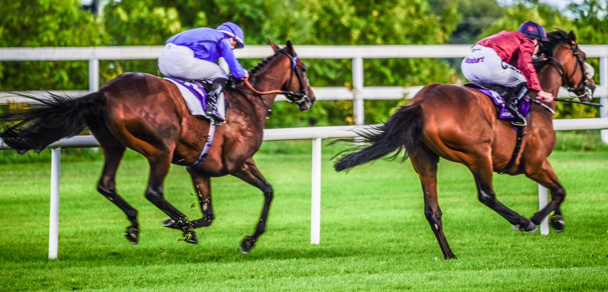

La cría española brilla fuera: RONCAL firma un 2º en Dax
> Seguimiento de elaboración propia: caballos criados en España (por la ausencia de sufijo de país) y cuadras españolas (cruzando con los propietarios oficiales del JCE) que compiten en el extranjero.

CC BY-SA 2.0
RONCAL, criado en España, firmó el mejor resultado de nuestra cría en Francia: 2º en Dax (2026-10-02), con R. DUBORD en la silla. En total, 1 caballos criados en España compitieron en hipódromos franceses entre el 2026-09-21 y el 2026-10-05.
Nuestros caballos en Francia
RONCAL — 1 salida(s): - 2026-10-02 · Dax: 2º (jockey R. DUBORD)
Cuadras españolas con caballos en Francia
TARAMUNDI — 6 salida(s): - 2026-09-23 · Toulouse: LIGHTNING GIRL (IRE) (11º) - 2026-09-23 · Toulouse: WITE TOAST (IRE) (3º) - 2026-09-27 · Castera-Verduzan: PASSEPARTOUT (FR) (3º) - 2026-09-28 · Bordeaux Le Bouscat: SAINT URIEL (FR) (6º)
VAYA ZARPAZO — 2 salida(s): - 2026-09-30 · Toulouse: LOREEN (GER) (1º (victoria)) - 2026-09-30 · Toulouse: LOREEN (GER) (1º (victoria))
YEGUADA ROCIO — 2 salida(s): - 2026-10-02 · Dax: IF NOT NOW (GB) (1º (victoria)) - 2026-10-02 · Dax: RONCAL (2º)
YEGUADA AGF — 4 salida(s): - 2026-09-23 · Toulouse: ZAGALA (FR) (2º) - 2026-09-28 · Bordeaux Le Bouscat: ZODIACO (FR) (2º) - 2026-09-30 · Toulouse: XILOFONO (FR) (2º) - 2026-09-30 · Toulouse: XILOFONO (FR) (2º)
BARREIROS — 2 salida(s): - 2026-09-28 · Bordeaux Le Bouscat: LA PEPA (FR) (2º) - 2026-10-02 · Dax: LA PEPA (FR) (7º)
JAVIER MALDONADO TRINCHANT — 1 salida(s): - 2026-09-23 · Toulouse: LUCKY LOCO (GB) (2º)
MARTUL — 1 salida(s): - 2026-09-30 · Toulouse: PEYRASSOL (FR) (2º)
VILLAR DE LA YEGUA — 1 salida(s): - 2026-10-05 · Deauville: NURTURE (FR) (2º)
IMPERIAL STUD — 1 salida(s): - 2026-10-02 · Dax: CHERGUI (FR) (3º)
MADARIAGA&CU — 4 salida(s): - 2026-09-30 · Toulouse: LA ALMADIA (FR) (11º) - 2026-09-30 · Toulouse: LA ALMADIA (FR) (11º) - 2026-10-04 · Cazaubon: LA ALMADIA (FR) (4º) - 2026-10-05 · Deauville: KERDINA (FR) (9º)
MALLORCA — 1 salida(s): - 2026-09-30 · Toulouse: ALPHABIA (IRE) (4º)
BERNARDO — 1 salida(s): - 2026-10-02 · Dax: DARKAVA (FR) (5º)
Seguimiento de elaboración propia: caballos criados en España (por la ausencia de sufijo de país) y cuadras españolas (cruzando con los propietarios oficiales del JCE) que compiten en el extranjero.
Por Martín Larrañeta